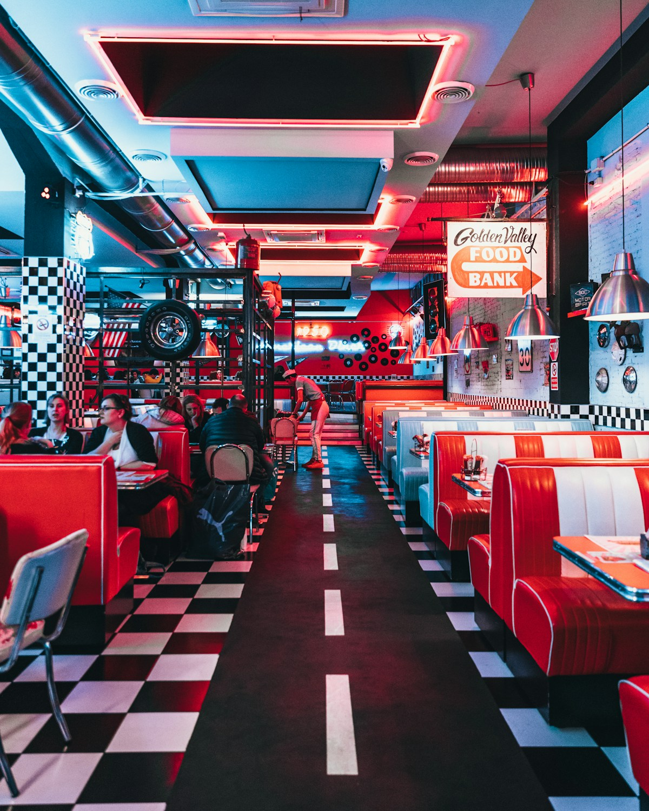

🇮🇹 Roma: tour y Vaticano
🟡 Tour en la mañana, Vaticano en la tarde Entre medio, caminan libres por el centro.
Todo el día en Roma.
🏨 Hotel: Parco de' Medici Hotel
📍 Dirección: Via Cesare Giulio Viola 19, Roma
🚕 Mostrar al taxista (hotel de esta noche)
Via Cesare Giulio Viola 19, 00148 RomaCi porti a questo hotel, per favore. Siamo in cinque.
⏰ El día
🌅 Mañana
- Desayunan en el hotel
▸ más detalle
Desayuno incluido. El bus del tour recoge a las 9:00. - El bus del tour los recoge en el hotel
▸ más detalle
Bajen con tiempo a la puerta del hotel. - Hacen un tour panorámico por Roma en bus
Ven desde el bus: Coliseo, Circo Máximo (antiguo estadio de carreras), Santa María la Mayor (basílica) y Vaticano, todo por fuera.
▸ más detalle
Solo por fuera. Al Vaticano entran hoy en la tarde; al Coliseo, mañana.
☀️ Tarde
- Termina el tour panorámico: el bus los deja en el centro
Libres hasta el Vaticano: almuerzan y caminan.
- 🍽 Almuerzan: elijan una opción
Pidan los supplì para llevar y cómanlos caminando hacia Trevi (22 min).
Al pasoSupplizio · supplì (croqueta de arroz frita, típica de Roma) €3 cada uno · unos €8–10 por persona👉 2-3 supplì por persona, para llevar.
🍽 Qué pedir: imperdible, típico y sabor conocido
⭐ Imperdible- Classico (€3) — Bolita de arroz frita con carne, tomate, mozzarella y parmesano
- Carbonara (€3) — Supplì con huevo, pecorino, guanciale (tocino de cerdo) y mozzarella
🍴 También típico (menos parecido a lo de Perú)- Croccante di baccalà e Ajioli (€12) — Filete de bacalao salado frito con alioli; sabor fuerte a pescado
- Mozzarella in carrozza (€7) — Pan casero frito relleno de mozzarella y anchoa (salada)
🇵🇪 Sabor conocido- Pomodoro & basilico (€3) — Supplì de tomate, mozzarella y albahaca; sabor suave
- Crocchetta affumicata (€2,50) — Croqueta de papa con pecorino y mozzarella ahumados
- Insalata di pollo (€10) — Ensalada de pollo con lechuga y mayonesa casera
Para pedir: Diez supplì: cuatro clásicos, tres de carbonara y tres de tomate con albahaca, por favor.Dieci supplì: quattro classici, tre carbonara e tre pomodoro e basilico, per favore.🗣 DIE-chi sup-PLI: KUAT-tro KLAS-si-chi, TRE kar-bo-NA-ra e TRE po-mo-DO-ro e ba-SI-li-ko, per fa-VO-re💡 Todos los supplì cuestan €3: pidan 2 o 3 por persona y prueben sabores distintos.
Carta vista: sin fecha (web oficial vista 28 sep 2026).
🕒 Horario y dirección
🕒 Horario: jueves 12:00–20:00
📍 Dirección: Via dei Banchi Vecchi 143, a 1 km (14 min) a pie del Panteón y 22 min de TreviVer otras 3 opciones
👉 Sándwiches, fruta y agua.
🕒 Horario y dirección
🕒 Horario: todos los días 8:30–21:00
📍 Dirección: Via Giustiniani 18/B, pegado al Panteón👉 4 pizzas sencillas + 1 variada, para los 5.
🍽 Qué pedir: imperdible, típico y sabor conocido
⭐ Imperdible- Margherita — Pizza romana delgada, con tomate y mozzarella
- Pizza Baffetto — La de la casa: hongos, salchicha, huevo, alcachofitas, cebolla, pimiento
🍴 También típico (menos parecido a lo de Perú)- Pizza alla Napoletana — Pizza con tomate, mozzarella y anchoas (pescado salado)
- Crostino Mozzarella e Alici — Pan tostado con mozzarella y anchoas; muy salado
🇵🇪 Sabor conocido- Calzoni — Pizza cerrada con mozzarella, huevo, hongos y jamón
- Pizza ai Funghi — Pizza de tomate, mozzarella y champiñones
- Bruschetta Mista — Pan tostado con tomate, aceitunas, hongos y frejoles
Para pedir: Cuatro margheritas y una pizza Baffetto, por favor.Quattro margherite e una pizza Baffetto, per favore.🗣 KUAT-tro mar-gue-RI-te e U-na PIT-tsa baf-FET-to, per fa-VO-re💡 No aceptan reservas (solo grupos muy grandes): se hace cola en la puerta. Cierra los martes. Se come por menos de €20 por persona.
Carta vista: sin fecha (carta sin precios); artículo del 12 feb 2026.
🕒 Horario y dirección
🕒 Horario: jueves 12:00–15:30 y 18:30–01:00
📍 Dirección: Via del Governo Vecchio 114, junto a Navona
☎ +39 06 686 1617👉 2 cacio e pepe + 1 carbonara + 1 pasta al pesto con tomatitos + 1 pizza margherita para Anddy (no tienen lasaña).
🍽 Qué pedir: imperdible, típico y sabor conocido
⭐ Imperdible- Cacio e Pepe del Seminario (€13) — Spaghetti con queso pecorino y pimienta negra; el más vendido de la casa
- Maccheroni alla Carbonara (€14) — Pasta corta con huevo, guanciale (tocino de cerdo) crocante y pecorino
🍴 También típico (menos parecido a lo de Perú)- Saltimbocca alla romana servito con piselli (€13) — Filetes de cerdo con jamón y salvia (hierba fuerte), con arvejas
- Zuppa di ceci e baccalà (€13) — Sopa de garbanzos con bacalao salado, tomate picante y romero
🇵🇪 Sabor conocido- Margherita (€12) — Pizza de tomate y mozzarella
- Maccheroni con pesto e pomodorini (€13) — Pasta corta con pesto de albahaca y tomatitos (tallarín verde)
- Fettina panata con patate fritte (€12) — Filete de cerdo empanizado, tipo milanesa, con papas fritas
Para pedir: Para cinco: dos cacio e pepe, una carbonara, unos maccheroni con pesto y tomatitos y una margherita, por favor.Per cinque: due cacio e pepe, una carbonara, dei maccheroni con pesto e pomodorini e una margherita, per favore.🗣 per CHIN-kue: DU-e KA-cho e PE-pe, U-na kar-bo-NA-ra, dei mak-ke-RO-ni kon PES-to e po-mo-do-RI-ni e U-na mar-gue-RI-ta, per fa-VO-re💡 No hay lasaña en la carta: para Anddy, la pizza margherita (€12). De entrada barata para compartir: el Mix 3 supplì a €8, o supplì sueltos a €3.
Carta vista: sin fecha (web oficial vista 28 sep 2026).
🕒 Horario y dirección
🕒 Horario: todos los días 12:00–23:15
📍 Dirección: Via del Seminario 105
ℹ️ Bruschette €2–4 para compartir. - ⛲ Visitan la Fontana di Trevi
Fontana di Trevi (la fuente más famosa de Roma). Desde Supplizio, 1,6 km (22 min) a pie.
▸ más detalle
Para bajar al borde, entren por Via della Stamperia (costado derecho de la fuente) con la entrada que ya compraron; desde la plaza se ve gratis. Tiren una moneda de espaldas, mano derecha sobre el hombro izquierdo: tradición para volver a Roma. No se metan al agua ni se sienten en el borde: hay multa. - 🚶 Pasean libres del centro al Vaticano
Unas 2 h 15 libres (hasta 30 min antes de la hora del Vaticano), caminando y gratis.
🚶 Paseo gratis de Trevi al Vaticano (una hora caminando)
Corten el paseo donde estén cuando toque ir al punto de encuentro. Lleguen 30 min antes de la hora que diga el guía. Trevi → Sant'Ignazio (7 min: cúpula falsa pintada, se mira desde el disco de mármol del piso; 9:00–23:30, gratis) → Panteón (templo romano antiguo) por fuera (4 min) → Piazza Navona (plaza con la fuente de Bernini) (5 min) → Campo de' Fiori (plaza de mercado) (6 min; mercado hasta unos 14:00) → Ponte Sant'Angelo (puente sobre el río Tíber) (13 min) → Piazza San Pietro (12 min) → entrada de los Museos Vaticanos (13 min). Total unos 4,5 km: una hora de caminata y el resto en paradas cortas. Si se atrasan, desde Navona tomen un taxi al Vaticano (10 min).
🚫 No se sienten en la escalinata de Piazza di Spagna (multa €250–400). - ⭐ Imperdible ⛪ Visitan los Museos Vaticanos
Con la Capilla Sixtina y guía de la agencia.
🥪 Antes de entrar, papá come algo salado (compren algo extra en el almuerzo).
👕 Hombros y rodillas cubiertos (nada de shorts ni faldas cortas).
▸ más detalle
La hora y el punto de encuentro los dice el guía el día anterior; las 16:30 son referencia. Lleven el pasaporte y el voucher de la excursión (impreso o en el celular).
🌙 Noche
- Terminan la visita al Vaticano
📸 Piazza San Pietro (la plaza de la Basílica de San Pedro) iluminada, gratis.
🚕 Cómo llegar a la cena
De la Piazza San Pietro a Trastevere: taxi, 10-15 min (de noche, siempre taxi; ☎ +39 06 3570). Si el bus del tour los devuelve al hotel, cenan en el Verde Smeraldo (pregunten en recepción si abre) o en La Serra, el restaurante del Holiday Inn de al lado (4 min a pie).🍕 Si tienen hambre
Pizzarium Bonci, Via della Meloria 43 (1,7 km, unos 23 min a pie desde la plaza; de noche, mejor en taxi; queda cerca de la entrada de los Museos), pizza al taglio (pizza rectangular que se vende por peso), jueves 11:00–22:00, por peso, €15–30/kg (unos €4–9 por persona). Es para picar algo: si van, llegan a cenar a Trastevere hacia las 20:45, no a las 20:15. - 🍽 Cenan en Trastevere (barrio con mucha vida nocturna): elijan una opción
Del Vaticano a Trastevere, taxi de 10–15 min.
👉 1-2 trapizzinos o 2-3 supplì por persona.
🍽 Qué pedir: imperdible, típico y sabor conocido
⭐ Imperdible- Pollo alla cacciatora (€5) — Triángulo de pizza relleno de pollo guisado con vino blanco, ajo y romero
- Polpetta al sugo (€5) — Triángulo de pizza relleno de albóndiga de res en salsa de tomate
🍴 También típico (menos parecido a lo de Perú)- Lingua in salsa verde (€5) — Lengua en salsa verde de hierbas; es víscera
- Supplì con regaje di pollo (€2) — Bolita de arroz frita con menudencias de pollo (sabor que va rotando)
🇵🇪 Sabor conocido- Parmigiana (€5) — Triángulo relleno de berenjena con tomate y queso
- Supplì classico (€2) — Bolita de arroz frita, la clásica de la casa
Para pedir: Cinco trapizzini: tres de pollo a la cazadora y dos de albóndiga en salsa, por favor.Cinque trapizzini: tre pollo alla cacciatora e due polpetta al sugo, per favore.🗣 CHIN-kue tra-pit-TSI-ni: tre POL-lo AL-la kat-cha-TO-ra e DU-e pol-PET-ta al SU-go, per fa-VO-re💡 Según su web, cualquier trapizzino cuesta €5 y cualquier supplì €2. Cada día hay 5 sabores fijos y 3 que van cambiando.
Carta vista: sin fecha (web oficial vista 28 sep 2026).
🕒 Horario y dirección
🕒 Horario: Trapizzino jueves hasta la 01:00 · Supplì hasta las 21:00 (vayan solo si llegan antes de las 20:30)
📍 Dirección: Trapizzino: Piazza Trilussa 46 · Supplì: Via di San Francesco a Ripa 137Ver otras 2 opciones
👉 Sándwiches, fruta y agua.
🕒 Horario y dirección
🕒 Horario: todos los días 8:00–22:00
📍 Dirección: Piazza Mastai 4👉 4-5 pizzas para los 5, variando ingredientes.
🍽 Qué pedir: imperdible, típico y sabor conocido
⭐ Imperdible- Carbonara (€12 (Glovo)) — Pizza blanca con huevo, mozzarella, panceta, pecorino y pimienta negra
- Calzone ricotta e nutella (€7 el pequeño (Glovo); el grande cuesta más) — Postre dulce para compartir (no es para papá): masa cerrada rellena de ricotta y Nutella
🍴 También típico (menos parecido a lo de Perú)- Fiore di zucca (€3,50 (Glovo)) — Flor de calabacín frita con mozzarella y anchoa salada
- Supplì cacio e pepe (€3,50 (Glovo)) — Bolita de arroz frita con mozzarella, pecorino (queso fuerte) y pimienta
🇵🇪 Sabor conocido- Margherita (€10 (Glovo)) — Pizza de tomate y mozzarella
- Pomodoro e basilico — Pasta con salsa de tomate y albahaca (tallarín rojo)
- Calzone Prosciutto cotto e mozzarella (€10 (Glovo)) — Pizza cerrada con jamón cocido y mozzarella
Para pedir: Dos pizzas carbonara, tres margheritas y un calzone de ricotta y Nutella grande, por favor.Due pizze carbonara, tre margherite e un calzone ricotta e nutella grande, per favore.🗣 DU-e PIT-tse kar-bo-NA-ra, tre mar-gue-RI-te e un kal-TSO-ne ri-KOT-ta e nu-TEL-la GRAN-de, per fa-VO-re💡 El calzone de Nutella viene grande o pequeño: pidan uno grande para compartir. La pasta no se sirve los lunes. Abren todos los días de 12:00 a 24:00 y suele haber cola. Los precios marcados (Glovo) son de delivery; en el local suelen ser más bajos.
Carta vista: sin fecha (web oficial y Glovo vistos 28 sep 2026).
🕒 Horario y dirección
🕒 Horario: todos los días 12:00–24:00
📍 Dirección: Vicolo del Bologna 45, a 2 min de Piazza Trilussa - Vuelven al hotel en taxi
▸ más detalle
Pídanlo desde el restaurante o al ☎ +39 06 3570. Unos 20-25 min hasta el hotel en Magliana.
🚕 De noche, taxi: del Vaticano a Trastevere y de Trastevere al hotel. Taxi para 5: pidan uno grande (entran 5). Si no hay, 2 taxis.
👤 Cada uno paga con su propia Global66 en su celular. Un celular paga por una sola persona. Abi usa la de papá.
🚇 Metro: acerquen la Global66 al torniquete. €1,50.
🚌 Bus y tranvía 🚆 y tren FL1: compren antes el boleto BIT (€1,50, vale 100 min) en la máquina o en un tabaco (tienda con una "T" en el letrero). Pásenlo por la maquinita al subir; en el tren FL1, antes de subir, en el andén.
⚠️ Boleto sin pasar por la maquinita = sin boleto: hay multa.
🚕 Taxi: ☎ +39 06 3570 (o su app itTaxi). Digan «siamo in cinque» (somos 5); si no hay grande, 2 taxis.
😋 Qué probar hoy
Qué son

Ver todo
📍 Via della Maddalena 41, 3 min del Panteón
🚫 Roma: mal uso de fuentes/nasoni €160–450; dañar monumentos desde €400.
Detalle
• Escalinata de Plaza de España: prohibido sentarse, €250–400.
• Panteón: hombros cubiertos, nada de shorts ni faldas cortas.
• Boleto sin pasar por la máquina = sin boleto: multa ATAC (la empresa de transporte de Roma) €54,90 si se paga en 5 días, €104,90 después.
• Comprar falsificaciones: multan al que compra, €100 a €7.000 (ley 99/2009).

